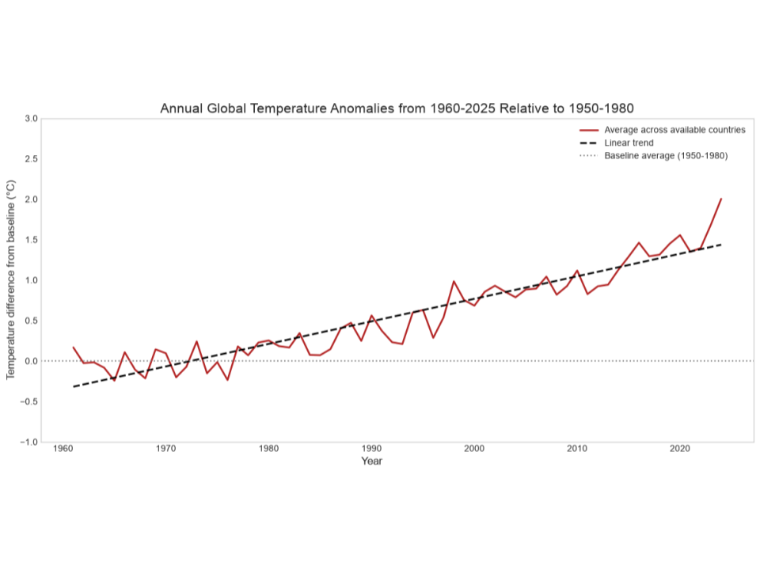
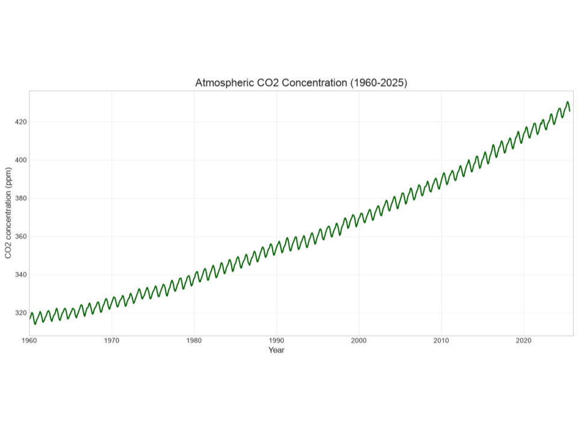
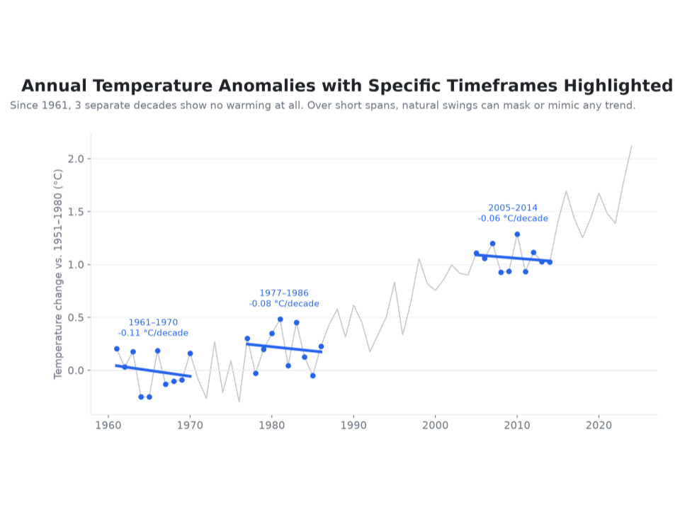
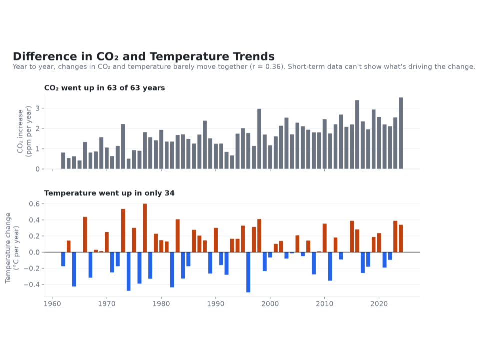

Proposition: The Earth is in the midst of a long term warming trend as a result of human activity
FOR the Proposition

Design Decisions and Rationale:
- Average Across Available Countries (Earnest, +1.5): We used the average temperature anomalies across the available countries to represent the broader warming trend rather than looking at individual countries. This makes the graphic far more persuasive in terms of the general warming trend over the decades. It does of course mean that we're not quite representing the global temperature in the most accurate way as the countries are of vastly different sizes. We did consider the option of showing the individual countries but in the end the averaging was far more effective in terms of showing the pattern.
- Linear Trend Line (Fully Earnest, +2): We've added a dashed linear trend line to highlight the general increase in the temperature anomalies from 1960 to 2025. That makes the long term warming trend much easier to see given the year to year variation. The trend line is of course a simplification of the actual data, but it does a good job of showing the general direction of the trend. We did consider just using the original temperature line, but the added trend line is far clearer.
- Baseline Average (1950-1980) (Fully Earnest, +2): We've included a horizontal reference line representing the 1950-1980 baseline average so that the temperature anomalies can be compared against a consistent baseline. This makes the warming trend far more compelling as the reader can see quite clearly how the temperature anomalies have moved well above the baseline. We did consider omitting the reference line but it's clearly useful in providing context to the anomalies.
- Temperature Difference Instead of Absolute Temperature (Earnest, +1.5): We presented the temperature anomalies in degrees C rather than absolute temperatures as we wanted to highlight the changes from the baseline. The anomaly makes the relatively small but real differences in temperature much more obvious. Absolute temperatures may be more familiar to the reader but the anomaly is the better way of showing long term change and allows for comparison between different regions.

Design Decisions and Rationale:
- CO2 Concentration as the Main Variable (Earnest, +1.5): We went with atmospheric CO2 concentration as the measure as CO2 is a key greenhouse gas in relation to global warming. The chart is very clear in terms of the rise in CO2 levels over time and is therefore very persuasive in the context of climate change. CO2 concentration by itself however doesn't prove that human activity has been the cause of the rise nor does it prove that it has had an effect on temperature. We did consider including a number of other climate indicators but in the end the simplicity of the chart with just CO2 was preferable.
- Green Line (Earnest, +1): We've used a green line to represent CO2 concentration as green is the colour most associated with the environment/climate. It's a fairly straightforward stylistic decision which reinforces the environmental theme and makes the chart more visually palatable. We did consider using a more neutral colour (blue or black) but green is the one that works best in terms of the theme without in any way affecting the way the data is presented.
- Grid Lines (Fully Earnest, +2): We've included the light grid lines to assist the reader in matching up the CO2 concentration values with the y axis and in seeing the trend over time. It improves the readability and makes the upward trend much easier to see. We did consider removing them for a cleaner look but they do provide useful reference points without in any way detracting from the data.
- Continuous Time-Series Line (Earnest, +1.5): We used a continuous line chart to show the change in atmospheric CO2 from 1960 to 2025. That enables the long term upward trend as well as the smaller periodic variations to be seen and reinforces the point that CO2 has been rising continuously. We did consider a bar chart but the line chart is far better at showing the continuous nature of the change over time.
AGAINST the Proposition

Design Decisions and Rationale:
- Average Temperatures Across Countries (Earnest, +1.5): We have calculated the average temperature anomalies across the countries to arrive at an overall representative measure of temperature trends across years. This allows us to highlight the differences between years and observe the broader pattern of global warming. One limitation of this approach is that countries differ in geographic size, meaning that an unweighted average may not perfectly represent global temperature trends. Additionally, certain countries may experience more extreme temperature fluctuations than others, potentially affecting the overall average.
- Line Chart Showing Temperature Changes Across Years (Fully Earnest, +2): We have created a line chart demonstrating temperature anomalies across the years. In the long-term picture, we can clearly observe an overall increase in temperatures, so we believe this is an earnest representation of the underlying data and patterns. Years are represented on the X-axis, while the Y-axis contains temperature anomalies in °C compared to the 1951-1980 baseline, connected through a continuous line. This design allows viewers to observe both short-term fluctuations and the overall warming trend without hiding any particular years.
- Highlighted Areas on Line Graph (Deceptive, -1): We have highlighted certain timeframes within the entire line graph to focus the viewers' attention on periods where temperatures decrease instead of increasing, also illustrating these periods with downward-sloping trend lines. In reality, the overall long-term trend shows increasing temperatures, but through this technique we deliberately concentrate the readers' attention on selected periods that support our claim. We believe this to be a somewhat deceptive technique because it involves selectively emphasizing short-term cooling periods, potentially creating the impression that global warming is less consistent than it actually is. However, viewers still have the ability to examine the entire graph and recognize that the highlighted timeframes do not represent the broader long-term trend.

Design Decisions and Rationale:
- Comparing Annual CO2 and Temperature Changes (Fully Earnest, +2): We have compared the annual changes in atmospheric CO2 concentrations and global temperature across the same timeframe to highlight the differences in their short-term patterns. Instead of presenting their absolute values, we used year-to-year changes to demonstrate how consistently CO2 levels increase while temperatures fluctuate. This allows viewers to observe that the two variables do not necessarily move in the same direction every year. However, annual fluctuations alone cannot determine whether CO2 contributes to long-term warming.
- Two Separate Bar Charts with Consistent Timeframes (Fully Earnest, +2): We have created two vertically aligned bar charts representing annual CO2 increases and temperature changes over the same years. The X-axis represents years for both graphs, while the Y-axis shows CO2 increases in ppm per year and temperature changes in °C per year, respectively. We chose separate charts because the variables have different units and scales, making a combined visualization less straightforward to interpret. Additionally, we used contrasting colors for positive and negative temperature changes, allowing viewers to easily distinguish warming and cooling years. This design provides a relatively clear and accurate representation of the annual variations in both variables.
- Emphasizing the Number of Years with Positive Changes (Deceptive, -1): We have added bold statements above each chart highlighting that CO₂ increased in all 63 years, while temperature increased in only 34. This deliberately directs the viewer's attention toward the apparent inconsistency between the two variables, making their relationship seem weaker than it might actually be. While these numbers accurately represent the annual changes in our dataset, comparing the frequency of yearly increases can be misleading because CO₂'s warming effect is primarily reflected in long-term temperature trends rather than consistent year-to-year warming. We believe this is a somewhat deceptive technique, as it emphasizes short-term differences without providing the full context of their long-term relationship.
- Focusing on Annual Changes Rather Than Long-Term Trends (Deceptive, -1): By visualizing year-to-year changes instead of absolute CO₂ concentrations and temperature anomalies, we shift the viewer's focus away from their broader long-term upward trends. This makes the relationship between CO₂ and temperature appear less consistent, especially because natural variability can cause temperatures to decrease in individual years despite increasing greenhouse gas concentrations. Although the data itself is represented accurately, this design decision can lead viewers to underestimate the strength of the long-term relationship. We believe this introduces a degree of deception through the choice of timeframe and measurement, while still allowing viewers to examine the actual annual fluctuations.
Final Reflection
The visualisations helped us to see how design choices can affect the way the reader interprets the data. The obvious one was that temperature anomalies and CO2 concentrations were both clearly rising over the long term, even though annual temperature changes fluctuated significantly. The more difficult part was working out what design elements would make certain patterns persuasive without distorting the data. Highlighting specific cooling periods with trend lines made short-term temperature decreases much more noticeable, while comparing annual CO2 and temperature changes emphasized how differently the two variables behave over shorter periods. We were quite surprised at the impact that such simple decisions as colour, the choice of timeframe, and the way the data was aggregated could have on the message of a visualisation.
Another key insight was that persuasive visualisations don't necessarily have to be misleading, but even accurate data can be presented in ways that influence interpretation. For example, highlighting selected cooling periods while keeping the overall warming trend visible can draw attention away from the bigger picture. Similarly, emphasizing that CO2 increased in all 63 years while temperatures increased in only 34 can make their relationship appear weaker than it actually is. These observations don't disprove the relationship between CO2 and global warming, but illustrate how short-term fluctuations can be used to support a particular argument. Likewise, averaging temperature anomalies across countries produces a much simpler picture, but can mask differences at the country level. These examples were a good reminder that even sensible design choices involve a compromise between clarity, accuracy and persuasion.
We define ethical analysis and visualisation as presenting the data in an accurate, transparent and understandable way, whilst being aware of the relevant limitations. We feel that it is acceptable to make a persuasive choice as long as it is presenting a real pattern and not hiding information which would materially alter the reader's interpretation. Where choices become misleading is when they selectively emphasize certain timeframes, exaggerate short-term differences, or imply conclusions that the data does not actually support. In the end, this project has helped us to see that ethical visualisation is about striking a balance between a persuasive presentation and an honest presentation of the data.